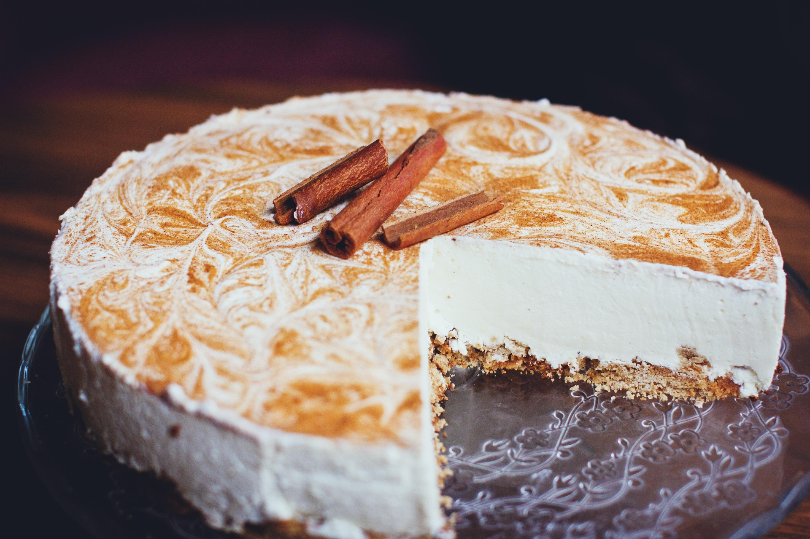

Homemade Cheesecake Recipe
This homemade cheesecake is rich, creamy, and perfect for any occasion. Follow this simple recipe to create a dessert that everyone will love!
Ingredients
- Crust: 1 ½ cups graham cracker crumbs, ½ cup melted butter, ¼ cup sugar.
- Filling: 4 (8 oz) packages of cream cheese, softened; 1 cup sugar; 1 teaspoon vanilla extract; 4 large eggs.
- Topping: Fresh fruit or fruit compote (optional).
Steps
- Preheat the oven to 325°F (160°C).
- In a bowl, mix the graham cracker crumbs, melted butter, and sugar until well combined. Press the mixture into the bottom of a springform pan to form the crust.
- In a large mixing bowl, beat the softened cream cheese until smooth. Gradually add the sugar and vanilla extract, mixing until well combined.
- Add the eggs one at a time, mixing on low speed after each addition until just combined. Do not overmix.
- Pour the cream cheese mixture over the crust in the springform pan.
- Bake in the preheated oven for about 50-60 minutes or until the center is set but still slightly jiggly.
- Turn off the oven and let the cheesecake cool in the oven with the door slightly open for about 1 hour.
- Remove the cheesecake from the oven and let it cool to room temperature. Then refrigerate for at least 4 hours or overnight to set completely.
- Before serving, top with fresh fruit or fruit compote if desired.
If you would like to explore for more recipes like this one just click any of the links below. ENJOY!😋
click Odin recipes to go back to the home page